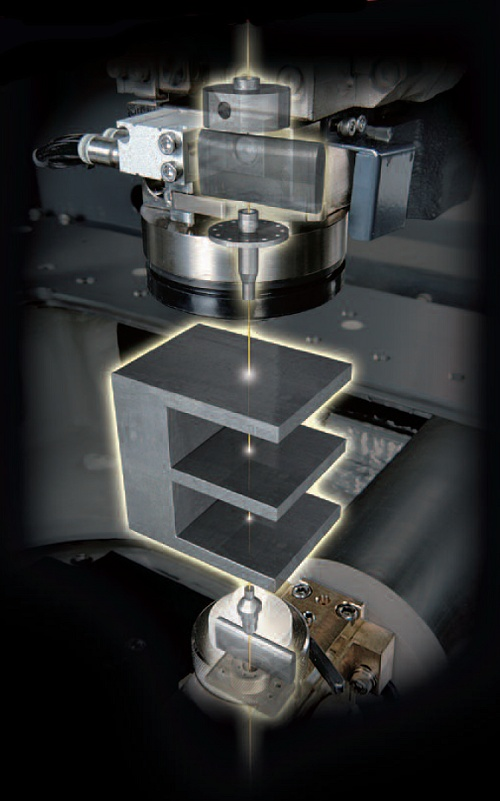
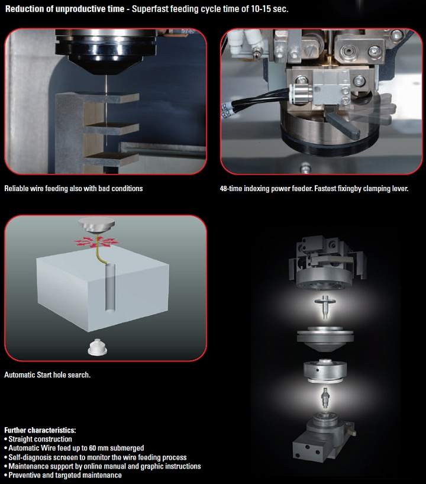
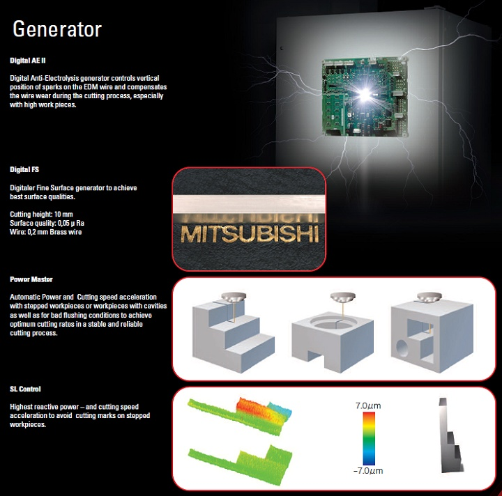
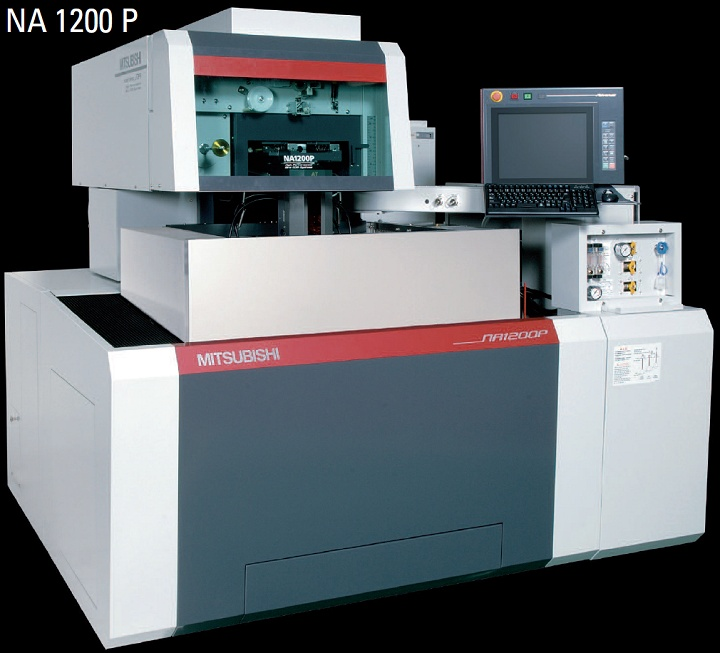
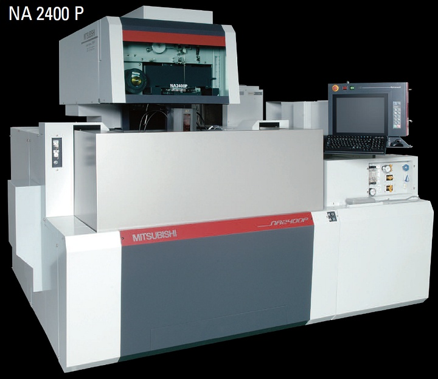

|


Ýþletme Maliyeti konusunda Mitsubishi son derece tutumlu ve dikkatlidir. Genel tüm imalat deðerleri pirinç tel üzerine inþa edilmiþ dijital jeneratör teknolojisi kesmek zorunda kalabileceðiniz egzotik malzemeler için zengin bir kütüphaneye de sahiptir. Tübüler Lineer tahrik sistemi geleneksel Lineer motorlardaki gibi gereksiz ve fazla güç sarfiyatýný engelleyecek innovasyonlara sahip, günümüz koþullarýna uygun ekonomik bir tüketim miktarýna sahiptir. NA2400-P için 13,5 kVA maksimum kurulu güç gerekmektedir.


Büyük resim için týklayýnýz
NA 1200 P |
Eksen Hareketleri X Y Z |
400 x 300 x 220 |
mm |
Eksen Hareketleri U V |
±60 x ±60 |
mm |
Maksimum Açýlý Kesim |
15º / 200 mm |
|
Ýþ Parçasý Ölçüleri En x Boy x Yükseklik |
810 x 700 x 215 |
mm |
Ýþ Parçasý Aðýrlýðý |
500 |
kg |
Kullanýlan Tel Çapý |
0,05 - 0,30 |
mm |
Maksimum Güç Sarfiyatý |
13,5 |
kVA |
Tezgah Aðýrlýðý |
3.060 |
kg |
Ýhtiyaç Duyulan Kullaným Alaný |
1.700 x 1965 |
mm |

NA 2400 P |
Eksen Hareketleri X Y Z |
600 x 400 x 310 |
mm |
Eksen Hareketleri U V |
±75 x ±75 |
mm |
Maksimum Açýlý Kesim |
15º / 260 mm |
|
Ýþ Parçasý Ölçüleri En x Boy x Yükseklik |
1050 x 820 x 305 |
mm |
Ýþ Parçasý Aðýrlýðý |
1.500 |
kg |
Kullanýlan Tel Çapý |
0,05 - 0,30 |
mm |
Maksimum Güç Sarfiyatý |
13,5 |
kVA |
Tezgah Aðýrlýðý |
4.410 |
kg |
Ýhtiyaç Duyulan Kullaným Alaný |
2.045 x 2150 |
mm |
Günümüzün eriþilen en üst noktasýnda duran yeni NA-P serisi Tel erozyon ürünleri ülkemizde Tezmaksan bünyesinde bulunan ve düzenli eðitimler sayesinde bilgi ve tecrübelerini her gün arttýran servis ve uygulama ekibi ile sizlere sunulmaktadýr.
Daha detaylý teknik bilgi ve satýþ koþullarý hakkýnda görüþmek için Tezmaksan Satýþ Temsilcileri ile iletiþime geçebilirsiniz.
Ýrtibat:
Tezmaksan Makina San. ve Tic. A.Þ.
Abdi Ýpekçi Cad. No:129
Bayrampaþa Ýstanbul
Tel: (212) 674 60 10
www.tezmaksan.com
|